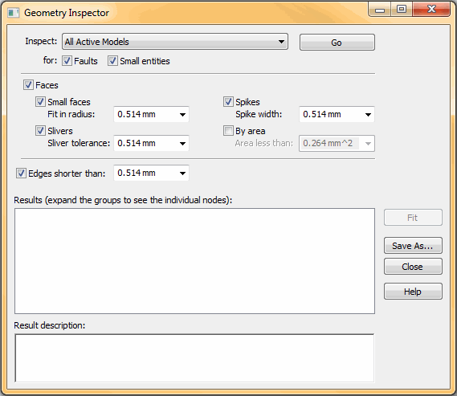

Removing geometry flaws and small entities
Parts that contain intricate features defined by very small faces and edges may produce meshing errors. You can use the Geometry Inspector to detect geometry flaws and to locate small faces, spikes, and slivers of geometry that cause problems.
For a part model, you can first try meshing the geometry using the Body Mesh option in the Tetrahedral Mesh dialog box. In most cases, this produces a good quality mesh for a complex part, and automatically simplifies the small faces and edges.
Opening the Geometry Inspector
There are two ways to open the Geometry Inspector:
-
When meshing fails, an error message dialog box is displayed. You can use the Run Geometry Inspector button in the dialog box to open the Geometry Inspector directly from the study.
In an assembly, this has the added advantage of listing the pass-fail state of each part and component in the study. The parts that failed are selected automatically for inspection.
-
From the ribbon, you can select the Inspect tab→Evaluate group→Geometry Inspector command .
When the Use advanced meshing check box is selected in the Mesh Options dialog box on the Mesh Sizing page, geometry slivers are removed from the model automatically to enable meshing to complete.
Using the Geometry Inspector for simulation studies
For the purpose of finite element analysis, use the following options in the Geometry Inspector dialog box to identify areas of the model that can be optimized.

-
Geometry from Active Simulation Study—After creating a study and selecting the model geometry, select the Geometry from Active Simulation Study option in the Geometry Inspector dialog box to narrow the focus of the inspection to the current study.
-
Small entities check box—Selecting this option enables you to specify the type of geometry to search for. By default, Faces, Slivers, and Spikes are selected. You also can change the tolerance search value.
-
Fit—When the inspection is complete, you can select any of the nodes in the Results area of the dialog box to highlight the matching geometry in the model. You also can use the Fit button to zoom and highlight all matching entities in the window at once.
-
You can simplify the model by selecting each of the small entities in PathFinder, and then deleting them using shortcut commands.
-
After making changes to the model, the data in the Geometry Inspector goes out of date. You need to select the command again to update the inspection list.
-
You can validate the improvements by meshing the model again. When you remesh an assembly, only the parts that failed the first time are reprocessed by the Mesh command.
For information about fault detection, see Using the Geometry Inspector in Solid Edge help.
How do I
Override mesh propertiesLearn more
Assembly best practices for simulationUsing a simplified model
Specifying material properties accurately
Offsetting edges around holes, openings, and fasteners
Optimizing study results
Simulation materials and properties
Mesh material properties